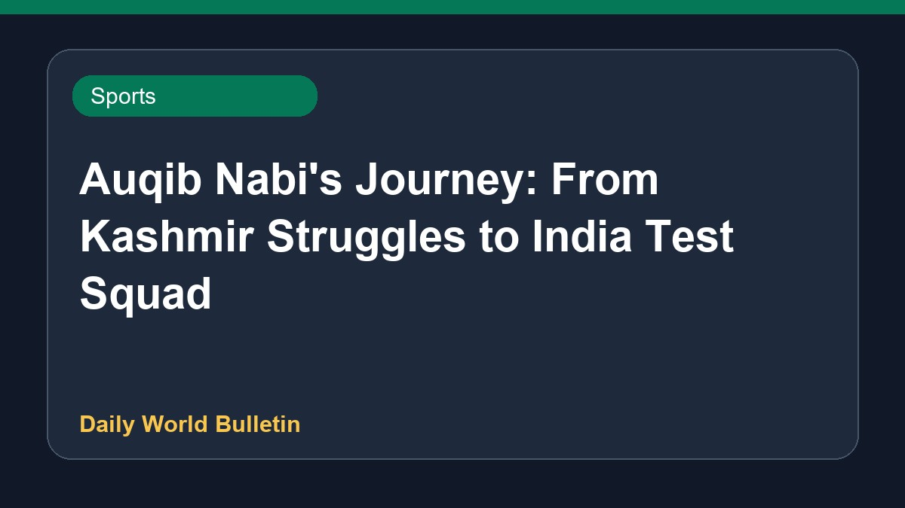

Auqib Nabi's Journey: From Kashmir Struggles to India Test Squad

Details are limited regarding the inspiring journey of fast bowler Auqib Nabi. A BBC report highlights his path from facing various hardships in Kashmir to earning a place in India's Test cricket squad. The coverage explores the challenges he overcame to reach the national level in cricket. Further information about his selection, background, and future prospects in the sport is currently sparse.
Original source: Sports News Sources
The making of Auqib Nabi: Kashmir's hardships to India's Test cricket squad - BBC ↗
The making of Auqib Nabi: Kashmir's hardships to India's Test cricket squad - BBC ↗